The Slump Buster
Found on a 1997 tape: the host of a late-night home shopping show has a solution for the afternoon slump, and he cannot contain himself. Black-and-white misery, full-colour miracle, a studio audience that goes 'ooooh', and it is Red Bull Sugarfree.
Instant pattern interrupt in a feed of glossy 2020s ads: the tape noise and the 4:3 energy stop the thumb, and everyone already knows the infomercial structure, so the viewer follows problem, product, benefit, proof, offer without effort. Parody gives permission to say the benefit loudly and repeat it, which a straight ad cannot do. It fails when the parody mocks the product or the viewer: the host is ridiculous, the product is never the punchline.
Contact sheet
One keyframe per shot, with the caption as it will appear.
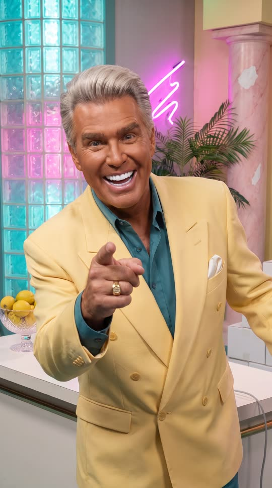
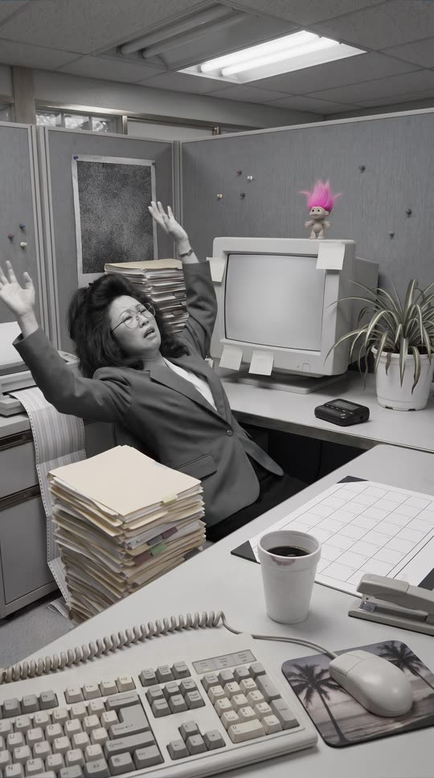
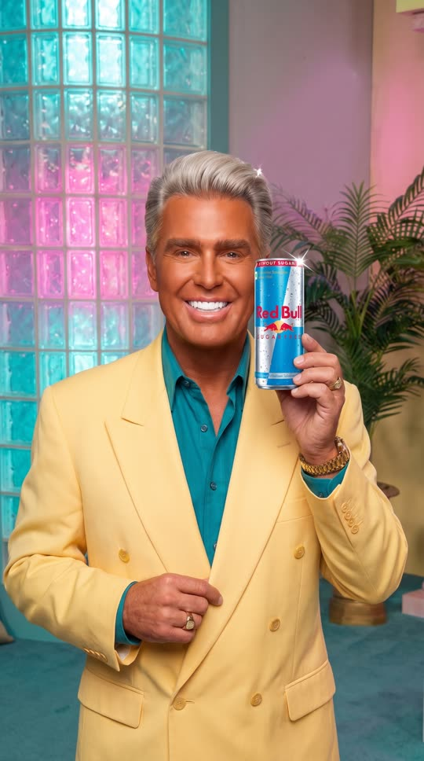
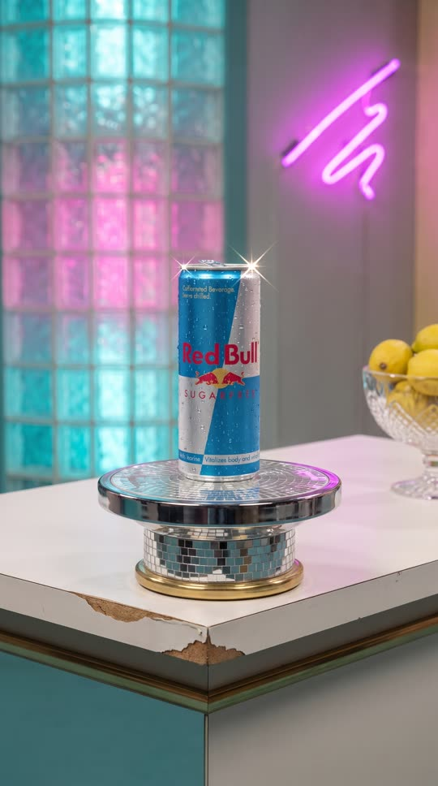


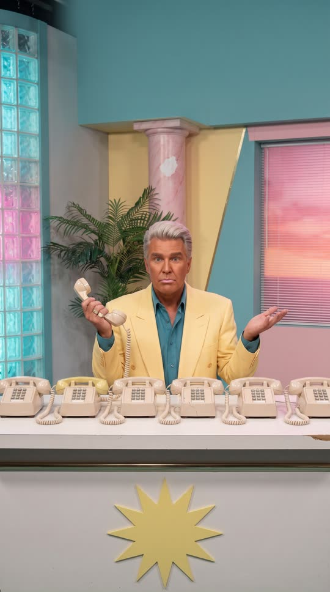
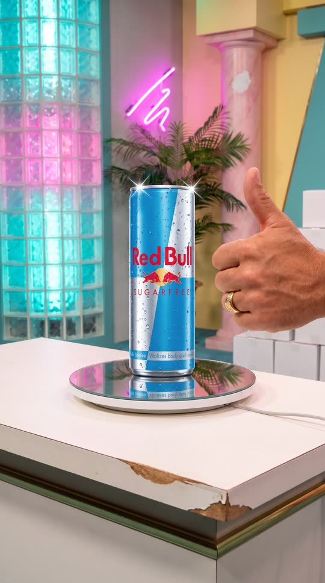
Cast and world
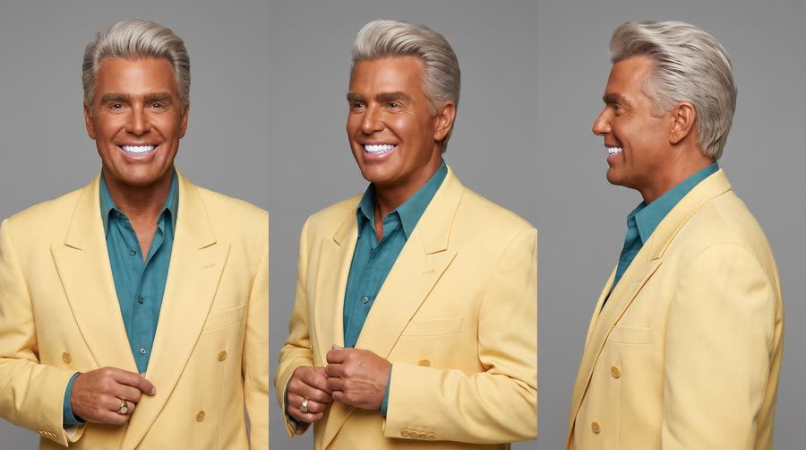
Voice: booming, relentlessly upbeat, slightly too loud, a classic 1990s announcer lilt, American
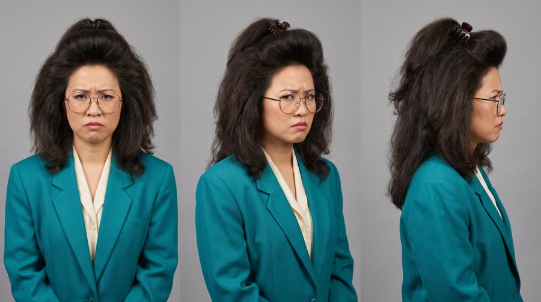
Voice: expressive, a bit theatrical, sitcom timing, American
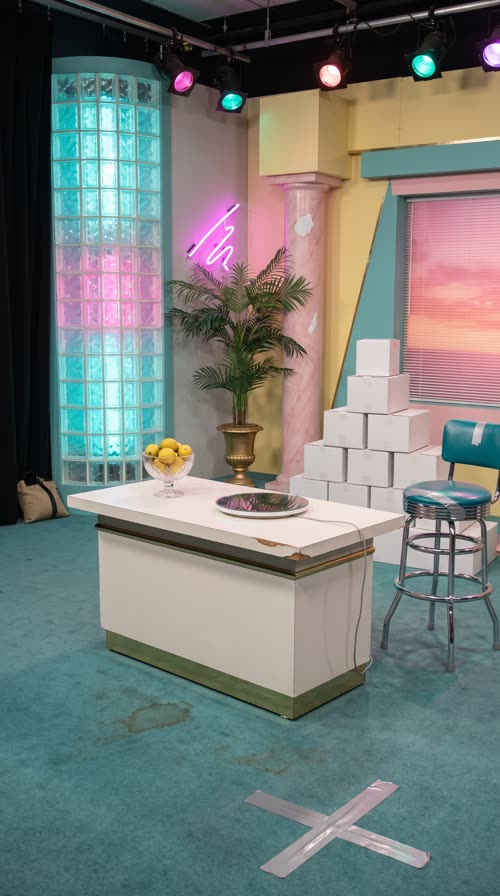
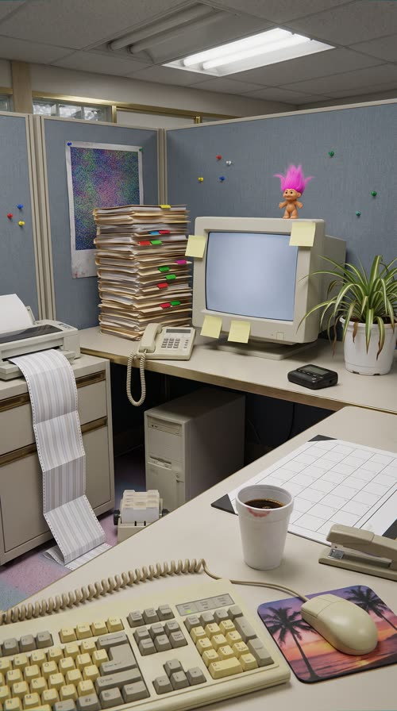
World. The fictional late-night home shopping show 'The Dale Dazzle Hour' on the fictional channel WonderVision 38, taped in 1997 on a pastel studio set with a small studio audience; the problem segment is a beige 1990s office. Palette. Teal, magenta and butter-yellow 1990s set with glass blocks and a fake palm; the can's sky blue and silver is the hero accent; the problem segment is fully black and white.
Fictional brands. The Dale Dazzle Hour (the show, only in post-rendered graphics); WonderVision 38 (fictional channel bug, post only); Dazzle Desk (the unbranded demo table, never shown as text)
World bible
Fixed with the concept: the lore, the objects and the textures that make this world specific. Only product-adjacent props change per product.
- The Dale Dazzle Hour tapes on Tuesday nights in Studio B of WonderVision 38 in Tampa, Florida, and airs at 2am. This is episode 412, taped on 14 October 1997.
- Dale Dazzle was born Dale Pruitt and sold above-ground pools door to door before he got the show in 1991. The gold pinky ring was bought with his first commission cheque in 1984 and he taps it on the table when he wants a cut.
- Gloria Tran is a claims processor at a Tampa insurance office, not an actor. Her sister-in-law works in the station's front office, and this is her third segment; she was paid in a gift basket.
- The studio audience is bussed in from a retirement community and a Thursday bowling league, paid in a free lunch, and the ooooh is rehearsed twice before tape rolls.
- The station manager has warned that if episode 412 does not move product, the 2am slot goes to a psychic hotline. The six desk phones were bought used from a closed travel agency in 1993 and only two of them ever connected.
Materials. Everything is 1997 television production stock and must be period accurate to 1997: painted wooden set flats with visible seams, glass blocks, white laminate, brass-tone and chrome trim, pastel carpet, acrylic, neon glass tubes, wax fruit, plastic plants. Office props are beige injection-moulded plastic, grey-blue fabric cubicle panels, manila paper and styrofoam. Nothing invented after 1997 appears anywhere: no flat screens, no mobile phones, no laptops, no earbuds, no light strips, no modern logos, no plastic water bottles. Everything is seen through soft standard-definition video with slight colour bleed.
Wear and time. Tuesday 14 October 1997, 11:40pm, the second take of the night. The hot studio lights have been on for three hours: Dale's forehead shines, his hairspray is giving up at the temples, the wax lemons are dusty and one strip of gaffer tape has lifted off the carpet. The office segment was taped the afternoon before under a flickering fluorescent tube, the coffee has a skin on it and the files are three weeks behind. Out of place: a stagehand's styrofoam cup left behind the palm urn.
Signature objects
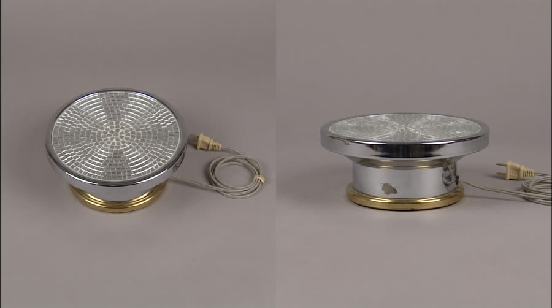
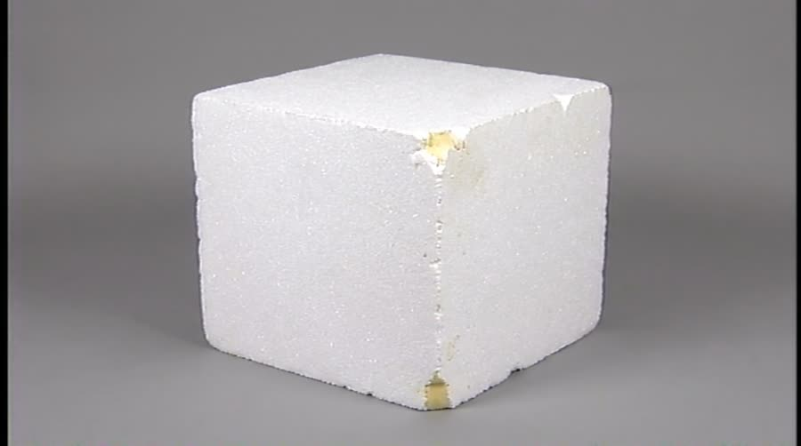
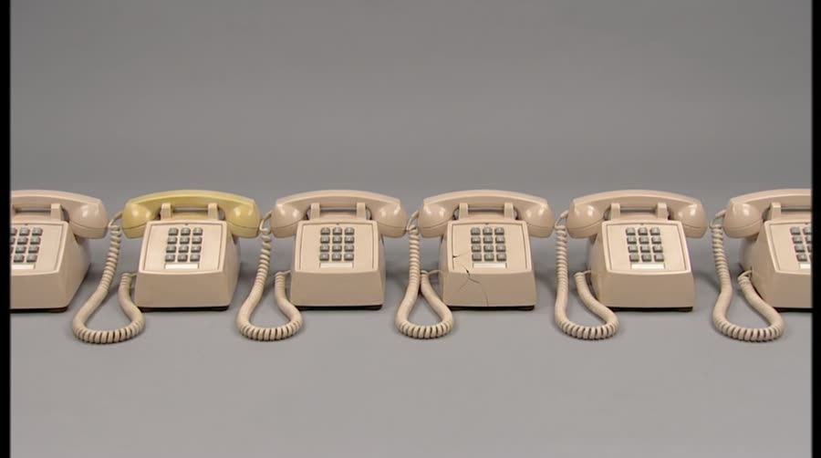
Set dressing by location
Foreground
teal carpet with a faint coffee stain and a cross of silver gaffer tape marking the host's spot; the white laminate demo table with a chipped front edge and a brass-tone trim strip; the small round mirrored rotating pedestal with a thin grey cord running off the back of the table; a cut crystal bowl of dusty wax lemons at the end of the table
Midground
a fake potted palm with dusty plastic fronds in a gold-painted urn; a pastel pink faux-marble column with a chip showing white plaster; a magenta neon squiggle tube mounted on the wall; a neat pyramid of plain white cardboard boxes on a side riser; a chrome bar stool with a teal vinyl seat, split and taped; a small four-point starburst shape painted in butter yellow on the front panel of the table
Background
a tall curved glass-block wall lit teal and magenta from behind; butter-yellow and teal geometric set flats with visible seams between them; a row of black ceiling track-light cans with coloured gels; a painted pink and orange sunset backdrop behind a fake window frame with white vertical blinds; the edge of a black stage curtain with a sandbag on a light stand
Foreground
a beige keyboard with yellowed keys and a coiled cord; a beige ball mouse on a mouse pad printed with a palm tree sunset; a styrofoam coffee cup with a pink lipstick mark and a skin on the coffee; a heavy beige stapler and a paper desk blotter with an empty grid
Midground
a chunky beige tube monitor with a blank grey glow and blank yellow sticky notes around its bezel; a tall wobbly stack of manila files with coloured tab stickers; a beige desk phone with a coiled cord and blank buttons; a small plush troll-like toy with neon pink hair sitting on top of the monitor; a black pager lying at the edge of the desk; a spider plant in a white plastic pot with a few brown tips
Background
grey-blue fabric cubicle walls with coloured push pins and a pinned poster of abstract colour noise; a beige tower computer under the desk with a floppy disk slot; a fluorescent ceiling panel with one flickering tube; a tractor-feed printer on a side cabinet with a long fold of striped paper spilling to the floor; a rotary card index file with blank cards
- Dale: the gold pinky ring from his first commission cheque in 1984, a little loose, turned with his thumb; a white pocket square folded into three sharp points; a chunky gold wristwatch with a scratched crystal; a tortoiseshell pocket comb in his inside breast pocket; a shine of hairspray failing at his temples under the hot lights
- Gloria: large round wire-frame glasses, bent slightly on the left; a tortoiseshell claw clip holding the blowout; a black pager clipped to her skirt waistband; a teal scrunchie on her wrist; her styrofoam coffee cup with a pink lipstick mark
- The Dale Dazzle Hour: a fat four-point starburst sparkle, butter yellow, teal and magenta. On: the front panel of the demo table (the starburst shape only), the phone desk front. Text in post: the show logo and all starbursts with words are added in post
- WonderVision 38: a rounded tube television outline with a small lightning zigzag inside, magenta and chrome. On: nothing in camera. Text in post: the channel bug in the bottom corner, post only
- Dazzle Desk: none, white laminate and brass. On: the demo table itself. Text in post: none
the hum and tick of hot studio lights; the whirr of the pedestal motor; the live audience's rehearsed ooooh; a fluorescent tube buzzing in the office; the screech of a tractor-feed printer; a pager chirping on the desk; the crack and hiss of the can; a dial tone from a receiver that nobody called
Beats
| Time | Beat | What happens |
|---|---|---|
| 0-4.5 | hook | Tape noise, then Dale bursts into a crash zoom: does this happen to you? Black and white: Gloria's face slides down her paperwork at 3pm and she throws up her hands. |
| 4.5-10 | product | Full colour: Dale holds the can by his grinning face and names it, then the beauty shot on the rotating pedestal with the one benefit. |
| 10-13 | proof | Gloria, now in colour and wide awake at the same desk, gives her testimonial. |
| 13-22.5 | more | But wait, there's more: Dale sweeps a giant novelty sugar cube off the demo table, the studio audience goes 'ooooh'. |
| 22.5-30 | cta | Dale at a desk of silent phones: operators are not standing by, just grab one. The can on the pedestal with the 'available where you shop' card and the tagline. |
Screenplay
53 spoken words in 30 s. Each line keeps its intent (fixed in the template) and its wording (written for this product).
| Time | Speaker | Line | Intent (template) |
|---|---|---|---|
| 0.3-1.8 | Dale | Does THIS happen to you? booming, pointing straight down the lens, hitting 'THIS' | Hook: the host accuses the viewer of having the problem. |
| 2.6-4.3 | Gloria | There's gotta be a better way! theatrical despair, arms flung up, sitcom timing | The victim of the everyday problem begs for a solution in the format's stock phrase. |
| 4.8-6.8 | Dale | Introducing Red Bull Sugarfree! triumphant, a dramatic pause before the name, then each word punched · Say: RED BULL SHUG-er-free, three clear punched words | Product line: the host introduces the product by name with too much enthusiasm. |
| 7.3-9.8 | Dale (off camera) | Helps you stay alert and focused, with no sugar! voiceover over the beauty shot, rapid and thrilled | The main benefit, read like a feature list, using an allowed claim only. |
| 10.3-12.6 | Gloria | Wow! I'm alert! I'm focused! delighted and a little too surprised, big thumbs up | Testimonial: the former victim confirms the benefit, over the top. |
| 13.3-15.0 | Dale | But wait, there's more! leaning into the lens, finger up, conspiratorial then loud | The format's signature escalation. |
| 15.8-19.2 | Dale | Same great benefits as the original. Without the sugar! slow and grand on the first sentence, then a flourish as he sweeps the cube away | The second selling point, demonstrated with a silly prop. |
| 22.8-26.2 | Dale | Operators are NOT standing by. Just grab one! deadpan on the first sentence, then back to full enthusiasm | CTA that flips the format's cliche: no ordering, just go get it where you shop. |
| 27.2-29.2 | Dale (off camera) | Wiiings without sugar! announcer voice, stretched and sung slightly, as if it were a jingle · Say: WINGS, stretch the vowel | Tagline in the brand's own words. |
Generation plan
U1 · 0 to 4.5 s · 5 s generation
Shots S01, S02 · References: dale card, gloria card, set plate, S01 keyframe as first frame
Vertical 9:16, footage from a 1990s TV infomercial, standard-definition video look, flat bright studio light, everything in focus. Shot 1 (0 to 2 s): crash zoom into @Image1 (Dale, tanned, butter-yellow double-breasted blazer) on a teal and magenta pastel set, he points straight down the lens and booms: "Does THIS happen to you?" Shot 2 (2 to 5 s): fully black and white, static wide of @Image2 (Gloria, big 1990s hair, round glasses, shoulder-pad blazer) slumped at a beige office desk, she jolts up, a stack of papers slides off, she flings her arms up and wails: "There's gotta be a better way!" Comic overacting. Native sound: boxy studio voice, papers sliding. No music, no text on screen, no numbers, no logos.
U2 · 4.5 to 10 s · 6 s generation · exact-risk (short, cheap to re-roll)
Shots S03, S04 · References: product can official, dale card, S03 keyframe as first frame
Vertical 9:16, 1990s TV infomercial, over-saturated colour, flat bright studio light. Shot 1 (0 to 2.5 s): medium close-up, @Image2 (Dale) holds the exact can from @Image1 gently upright at its base beside his grinning face, label to camera, a star glint on the rim, and announces with a pause before the name: "Introducing Red Bull Sugarfree!" (said RED BULL SHUG-er-free, three punched words). Shot 2 (2.5 to 6 s): locked-off beauty shot, the same can alone on a small mirrored pedestal that turns slowly, sparkles on the rim, plain wall on both sides; Dale's voice, rapid and thrilled: "Helps you stay alert and focused, with no sugar!" Keep the can's shape, colours, wordmark and two bulls exactly as @Image1; it never bends. Native sound: studio voice, a ding. No music, no text on screen.
U3 · 10 to 22.5 s · 13 s generation
Shots S05, S06, S07, S08 · References: gloria card, dale card, set plate, S05 keyframe as first frame
Vertical 9:16, 1990s TV infomercial, over-saturated colour, flat bright light, locked-off studio cameras. Shot 1 (0 to 3 s): @Image1 (Gloria) at a tidy beige office desk, bolt upright and beaming, one can like the product in one hand with the label to camera, thumbs up with the other: "Wow! I'm alert! I'm focused!" Shot 2 (3 to 5.5 s): crash zoom to a wide-angle extreme close-up of @Image2 (Dale) leaning into the lens, finger raised: "But wait, there's more!" Shot 3 (5.5 to 9.5 s): Dale behind a white demo table on the pastel set sweeps a giant white foam novelty sugar cube off the table with a flourish; the can stays upright and untouched on a mirrored pedestal: "Same great benefits as the original. Without the sugar!" Shot 4 (9.5 to 13 s): reverse wide from behind Dale taking a bow, a small studio audience of varied adults in 1990s clothes on low risers goes "ooooh" with hands on their cheeks. Native sound: studio voices, audience ooooh and applause. No music, no text, no numbers, no logos.
U4 · 22.5 to 30 s · 8 s generation · exact-risk (short, cheap to re-roll)
Shots S09, S10 · References: product can official, dale card, S09 keyframe as first frame
Vertical 9:16, 1990s TV infomercial, flat bright light. Shot 1 (0 to 4 s): @Image2 (Dale) at a long white desk with six plain beige telephones with blank buttons, none ringing; he lifts one receiver, shrugs at the lens deadpan: "Operators are NOT standing by." then brightens and points off camera: "Just grab one!" Clean plain area across the lower third. Shot 2 (4 to 8 s): locked-off pack shot, the exact can from @Image1 upright on a slowly turning mirrored pedestal, label to camera, sparkles, Dale's tanned hand with a gold pinky ring gives a thumbs up beside it; his announcer voice sings: "Wiiings without sugar!" The can does not bend or change. Keep the upper quarter and lower third as plain wall. Native sound: studio voice, a ding. No music, no text, no numbers.
Sound, music, voice, captions
| 0 to 4.5 s | sting and problem | A 1-second bright synth-brass sting with a cymbal swell on the crash zoom (0 to 1 s), then the music drops to a droopy detuned tuba and muted trumpet 'wah wah' for the black and white problem, ending on a sad trombone slide at 4.3 s. |
| 4.5 to 22.5 s | jingle | The show's cheesy 1990s jingle bed at 112 bpm in E major: slap bass, gated-reverb snare, bright FM electric piano and a saxophone lick on each selling point; ducks 8 dB under every line; a harp gliss into the testimonial at 10 s and a record scratch stop at 13 s, restarting on 'more' at 15.5 s. |
| 22.5 to 30 s | button | The jingle thins to bass and hi-hat under the phone gag, then a full final chorus hit on the pack shot at 26.5 s, a sung 'wiiings' style synth-choir swell under the tagline, and a tape-stop pitch-down at 29.6 s. |
Added sound
- 0.0 s: VHS tape warble and tracking noise clearing (establishes the found-tape conceit in the first frame; post only)
- 5.6 s: sparkle ding on the can's star glint (marks the product reveal)
- 17.6 s: cartoon boing as the sugar cube falls (the comic button on the 'without the sugar' point)
- 19.8 s: studio audience 'ooooh' and applause (the format's signature; generated audiences are thin, so layer a clean one)
- 23.4 s: a single cricket chirp over the silent phones (sells the 'operators are NOT standing by' joke)
- Dale: native voice from U1, then his U1 vocal stem as voice reference for U2, U3 and U4; a light boxy studio EQ in post
- Gloria: native in U1 (black and white) and U3 (testimonial), U1 stem as reference for U3
font: Cooper Black (or a rounded heavy serif like it), size: 5.6% of frame height, color: #FFE94A (infomercial yellow), active word: the stressed word jumps to #FFFFFF and scales to 110% for 6 frames, shadow: 4px black outline plus a hard 6px drop shadow down-right in #D6246E (magenta), position: centre, 64% down the frame, above the platform UI safe zone, always below the host's chin, max words on screen: 4, box: False, animation: each caption line slides in from the left with a slight overshoot, like a 1990s character generator, starbursts: selling points also get a spinning yellow starburst with a two to three word callout (post only)
Post text- 0 to 1.2 s: PLAY / (VCR on-screen display, blocky white monospace with black edge, top left, flickering)
- 0 to 30 s: WonderVision 38 / (fictional channel bug, small semi-transparent white rounded wordmark, top right, 1990s bevel)
- 7.3 to 9.9 s: ALERT! / FOCUSED! (two spinning yellow starbursts with magenta Cooper Black lettering, left and right of the can, popping in one after the other)
- 15.8 to 19.4 s: NO SUGAR! / (a yellow starburst with a boing scale bounce, upper left over the plain wall)
- 23.0 to 30 s: AVAILABLE WHERE YOU SHOP / Look for the blue and silver can (1990s offer card in the lower third: magenta bar with a bevelled yellow border, white bold italic text sliding in from the right with a shine sweep; in the style of a phone-number card but with no number and no price)
- 27.0 to 30 s: Red Bull Sugarfree / Wiiings without sugar (chrome-gradient 1990s bevel type in the upper quarter above the can, lens flare sweep, then tape-stop wobble and blue screen on the last 6 frames)
Adaptation contract
How this same concept takes any physical product.
| Product type | Where it sits in the story | Scale |
|---|---|---|
| ingested | the host holds it up by his face, then the testimonial sips it | hand |
| applied | the host demonstrates it on his own hand or face at the demo table while the testimonial shows the result | hand |
| worn | the host models it with a spin on the set, the testimonial wears it at her desk | body |
| handheld | the host demonstrates it at the demo table as the gadget that fixes the black and white problem | hand |
| carried | the host unzips it on the demo table and pulls out item after item ('but wait, there's more') | hand to table |
| home | the set becomes a fake living room and the host unveils it from under a sheet | room |
| consumable | the host stacks the packs on the rotating pedestal and pours one out | hand |
| swap_props | The giant foam sugar cube is the product-specific villain: swap it per product for a giant novelty version of what the product does without. The pedestal, the phone bank, the set and the office stay. | props only |
Style bible
Look. Three looks, strictly separated: (1) the host on a bright pastel set (teal, magenta, butter yellow, glass blocks, a fake potted palm) lit flat and bright; (2) the problem segment in exaggerated black and white with slightly sped-up comic misfortune; (3) the reveal and testimonial in over-saturated colour. The image is always full-bleed 9:16; the 4:3 feel comes from composition (the host and props kept in the middle of the frame like a 1990s TV picture) and from a rounded CRT vignette added in post, with plain set wall above and below where post-rendered graphics (starbursts, the 'available where you shop' card, the offer card) sit. Direct address to camera, big hand gestures, the product held next to the face.
Camera. Locked-off studio pedestal cameras with slow zooms, never dollies; one crash zoom on 'but wait, there's more'; a wide-angle close-up of the host for the direct-to-lens moments; a slowly rotating turntable for the product beauty shot. Problem segment is a static wide with comedy timing. No handheld, no shallow depth of field: everything in focus like 1990s video.
Light and texture. Flat, high-key three-point studio light with hot highlights and hard shadow-free faces; slightly blown whites; a star-filter glint on the product. The problem segment is grey, dull and overcast in feel. Standard-definition interlaced video look: soft detail, chroma bleed on reds, slight colour fringing, blooming whites, low contrast blacks. In post: VHS tracking lines, a head-switching noise bar at the bottom edge, occasional tape wobble on cuts, a 'PLAY' on-screen display in the first second, and a faint rounded CRT vignette. The model only gives the soft 1990s video base; heavy tape damage is always post so faces and the can stay clean.
Pacing. Classic infomercial rhythm compressed to 30 s: problem in the first 4 s, the product revealed by 5 s and held 2 s next to the host's face, then a new 'selling point' every 2 to 3 s, each closed by a mini-button (a pose, a gasp, a boing), and the offer card held for the last 4 s. Comic beats get a half-second pause before the reaction.
Sound. Native dialogue with a slightly boxy studio sound. In post: a cheesy 1990s synth-and-slap-bass jingle bed, a laugh-and-'ooooh' studio audience, cartoon boings and whooshes on graphics, and a faint tape hiss with a warble on each cut. The host is always slightly too loud.
Known failures.
- asking for 'a 4:3 picture inside the 9:16 frame' makes the model render a small 4:3 image pillarboxed over a blurred copy of itself: always say full-bleed 9:16 filling the frame edge to edge, and get the 4:3 feel from centred composition plus a post CRT vignette
- a letterboxed location plate poisons every shot that references it: check plates are full-bleed before rendering keyframes, and say full-bleed in the plate prompt too
- the model renders fake price tags, phone numbers or 'CALL NOW' text itself: always ask for a plain empty set wall or a blank card area where graphics go, and say no text, numbers or letters anywhere
- the model over-applies VHS damage and wrecks the can label: ask only for soft 1990s video, keep tape damage for post
- the host becomes a modern influencer: repeat 1990s wardrobe words (double-breasted pastel blazer, big hair, huge white smile) and direct address
- the black and white problem segment comes back in colour or sepia: say fully black and white, no colour at all, and exclude the can from that shot
- the host's hand squeezes or bends the can when he waves it: say he holds it gently upright at the base with fingertips, label facing camera
- vintage beige telephones grow keypads with readable numbers: say plain beige telephones with blank buttons
- studio audiences come out with repeated clone faces: say a varied audience of different ages and ethnicities in 1990s clothes
- real 1990s product brands creep into the desk props: say the desk props are unbranded
- a rotating pedestal shot distorts the cylinder: keep the can upright, straight on, the pedestal does the turning
- a busy pack shot with the host's hand at the edge can come back as a picture-in-picture inset over a second copy of the set: say one single continuous camera image, no inset
- set props (the wax lemon bowl) leak into the office segment when the dressing lists are long: say only office things on the desk in office shots
- prop sheets pick up printed view captions and taped paper labels when called a reference sheet: ask for a full-frame studio photograph on a mid-grey backdrop with no tags, labels or handwriting
- a pack shot asking for clean graphic areas above and below can come back letterboxed with flat coloured bands: say the wall runs to the very top edge and the table front to the very bottom edge
Claims and cost
Claims used (all from the product page): Caffeine helps to improve concentration and increase alertness; Same benefits of the original Energy Drink, without sugar
Video estimate: 32 s of generation at $0.27/s = $8.64 first pass, $20 to 30 with retakes, plus about $1.5 music.